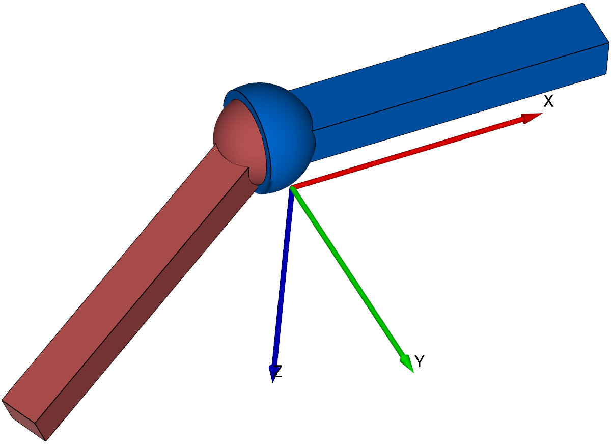

ObjectJointSpherical
A spherical joint, which constrains the relative translation between two position based markers.


Simpler: mbs.CreateSphericalJoint adds this item, with what it needs, in one call.
Interface
Python names:
ObjectJointSphericalorSphericalJoint, andVSphericalJointfor its visualizationMarkers it acts on: those providing
Position: MarkerBodyPosition, MarkerBodyRigid, MarkerNodePosition, MarkerNodeRigid, MarkerSuperElementPosition, MarkerSuperElementRigid, MarkerKinematicTreeRigid
Parameters
The parameters of the item; in a dictionary, its type is ‘JointSpherical’:
name |
type |
size |
default |
description |
|---|---|---|---|---|
name |
String |
‘’ |
constraints’s unique name |
|
markerNumbers |
ArrayMarkerIndex |
2 |
[ invalid (-1), invalid (-1) ] |
(symbol: \([m0,m1]\tp\)) list of markers used in connector; \(m1\) is the moving coin rigid body and \(m0\) is the marker for the ground body, which use the localPosition=[0,0,0] for this marker! |
constrainedAxes |
ArrayIndex |
3 |
[1,1,1] |
(symbol: \(\jv=[j_0,\,\ldots,\,j_2]\)) flag, which determines which translation (0,1,2) and rotation (3,4,5) axes are constrained; for \(j_i\), two values are possible: 0=free axis, 1=constrained axis |
activeConnector |
Bool |
True |
flag, which determines, if the connector is active; used to deactivate (temporarily) a connector or constraint |
|
visualization |
VObjectJointSpherical |
parameters for visualization of item |
Visualization parameters
The parameters of VObjectJointSpherical, given as visualization:
name |
type |
size |
default |
description |
|---|---|---|---|---|
show |
Bool |
True |
set true, if item is shown in visualization and false if it is not shown |
|
jointRadius |
float |
0.1 |
radius of joint to draw |
|
color |
Float4 |
4 |
[-1.,-1.,-1.,-1.] |
RGBA connector color; if R==-1, use default color |
Drawing
Drawn as all joints; a sphere of radius jointRadius at each marker, and a cylinder between them.
Settings beyond those of all joints: general.cylinderTiling, general.sphereTiling.
Output variables
Available as OutputVariableType in sensors, Get...Output() and other functions:
output variable |
symbol |
description |
|---|---|---|
Position |
\(\LU{0}{\pv}_{m0}\) |
current global position of position marker \(m0\) |
Velocity |
\(\LU{0}{\vv}_{m0}\) |
current global velocity of position marker \(m0\) |
Displacement |
\(\LU{0}{\Delta\pv}=\LU{0}{\pv}_{m1} - \LU{0}{\pv}_{m0}\) |
constraint drift or relative motion, if not all axes fixed |
Force |
\(\LU{0}{\fv}\) |
joint force in global coordinates |
Detailed description
Definition of quantities
intermediate variables |
symbol |
description |
|---|---|---|
marker m0 position |
\(\LU{0}{\pv}_{m0}\) |
current global position which is provided by marker \(m0\) |
marker m1 position |
\(\LU{0}{\pv}_{m1}\) |
current global position which is provided by marker \(m1\) |
marker m0 velocity |
\(\LU{0}{\vv}_{m0}\) |
current global velocity which is provided by marker \(m0\) |
marker m1 velocity |
\(\LU{0}{\vv}_{m1}\) |
current global velocity which is provided by marker \(m1\) |
relative velocity |
\(\LU{0}{\Delta\vv} = \LU{0}{\vv}_{m1} - \LU{0}{\vv}_{m0}\) |
constraint velocity error, or relative velocity if not all axes fixed |
algebraic variables |
\(\zv=[\lambda_0,\,\ldots,\,\lambda_2]\tp\) |
vector of algebraic variables (Lagrange multipliers) according to the algebraic equations |
Connector constraint equations
activeConnector = True:
If \([j_0,\,\ldots,\,j_2] = [1,1,1]\tp\), meaning that all translational coordinates are fixed, the translational index 3 constraints read
and the translational index 2 constraints read
If \([j_0,\,\ldots,\,j_2] \neq [1,1,1]\tp\), meaning that at least one translational coordinate is free, the translational index 3 constraints read for every component \(k \in [0,1,2]\) of the vector \(\LU{0}{\Delta\pv}\)
and the translational index 2 constraints read for every component \(k \in [0,1,2]\) of the vector \(\LU{0}{\Delta\vv}\)
activeConnector = False:
Example for body position marker
In this example, we study the constraint equations for two body position marker, see MarkerBodyPosition, based on rigid bodies, see ObjectRigidBody. The markers \(m_0\) and \(m_1\) have the positions
From there, we can derive the 3 constraint equation
The constraint jacobians simply follow from the position jacobians of the respective markers \(\LU{0}{\Jm_\mathrm{pos,0}}\) and \(\LU{0}{\Jm_\mathrm{pos,1}}\). The position jacobians are added to the system jacobian at rows according to the global indices of the constraint equations and the columns are determined by the coordinate indices of the bodies’ coordinates.
Mini example
#a point of a rigid body held at a ground point, free to rotate: a spherical pendulum
inertia = InertiaCuboid(density=1000, sideLengths=[1,0.1,0.1])
node = mbs.AddNode(NodeRigidBodyEP(referenceCoordinates=[0.5,0,0]+eulerParameters0))
body = mbs.AddObject(ObjectRigidBody(nodeNumber=node, mass=inertia.Mass(), inertia=inertia.GetInertia6D()))
mbs.AddLoad(LoadMassProportional(markerNumber=mbs.AddMarker(MarkerBodyMass(bodyNumber=body)), loadVector=[0,0,-9.81]))
mGround = mbs.AddMarker(MarkerBodyPosition(bodyNumber=oGround, localPosition=[0,0,0]))
mBody = mbs.AddMarker(MarkerBodyPosition(bodyNumber=body, localPosition=[-0.5,0,0]))
oJoint = mbs.AddObject(ObjectJointSpherical(markerNumbers=[mGround, mBody]))
mbs.Assemble()
simulationSettings = exu.SimulationSettings()
simulationSettings.timeIntegration.numberOfSteps = 1000
mbs.SolveDynamic(simulationSettings)
#the joint point stays at the origin; the height of the center after 1 second (numerical)
exu.sys['testResult'] = mbs.GetNodeOutput(node, exu.OutputVariableType.Position)[2]
Examples (Ex) and TestModels (TM) that show this item, with weblink to github: sphericalJointTest.py (TM), genericJointUserFunctionTest.py (TM), kinematicTreeConstraintTest.py (TM)